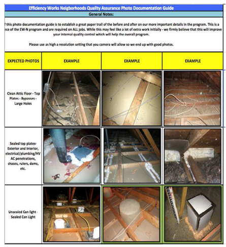

Tools Used
Initiated By
- Fort Collins
Partners
- CLEAResult
- Rocky Mountain Institute
- Platte River Power Authority
Results
- Doubled home visit enrollment rates
- Converted 44% of energy efficiency assessments to comprehensive upgrades
- Doubled average project energy savings
Landmark Case Study
Fort Collins Efficiency Works (Neighborhoods).
In a pilot from the fall of 2015 to the fall of 2016, Fort Collins Utilities doubled enrollment rates, converted 44% of energy efficiency assessments to comprehensive upgrades, and doubled average project energy savings. In 2017, this pilot received both Landmark designation and the American Public Power Association Energy Innovator award. The pilot offered a streamlined, turn-key service for homeowners that overcame key barriers to participation such as lack of time to select and meet with contractors, too many complex technical scope of work decisions, homeowner distrust of contractor proposals, and concerns about paying for improvements. The campaign also used a propensity model to target the neighborhoods with the highest potential for saving, and then direct mail marketing to neighborhoods with the highest propensity to participate. This case study was designated Landmark in 2017.
Background
Note: To minimize site maintenance costs, all case studies on this site are written in the past tense, even if they are ongoing as is the case with this particular program.
Fort Collins Utilities provides electricity, water, and waste water and storm water services over a 55 square mile area and sells over 1,500 gigawatt-hours of electricity annually to 70,500 residential and business customers. Natural gas is by far the main fuel used to heat homes in this region. The utility operates a distribution grid (99% underground) and substations. Power is purchased from the Platte River Power Authority of which Fort Collins is an equity owner, along with the cities of Loveland, Longmont and Estes Park. There are approximately 36,000 attached (duplex, townhomes) and detached single family homes that qualify for the Efficiency Works Homes Program and this Pilot. The utility operates 20 different conservation programs involving 250 measures in all.
In 2016, Fort Collins created the Efficiency Works Neighborhoods pilot program to increase the scale and comprehensiveness of energy efficiency and renewables projects needed to meet its Climate Action Plan in the existing home sector. The pilot aimed to increase the rates of participation, achieve higher energy savings, and make the upgrade process as simple as possible for homeowners.
Setting Objectives
Fort Collins wanted to:
- increase contact rates from 2.5%
- increase average mid- 40% conversion rate
- increase the number of measures per project from an average of 2, to 4 - 5 measures recommended per audit
- increase savings per project
Getting Informed
The utility chose to promote the purchase of whole home upgrades, due to its high potential impact on energy use and the high number of residents that had not yet implemented an upgrade.
Fort Collins used focus groups, segmentation studies, and customer surveys to identify barriers that had prevented or discouraged homeowners from implementing upgrades in the past. The key barriers included the following.
- Complex, technical decisions about scope of work
- Lack of time to meet with and select contractors
- Lack of trust in contractor proposals
- Lack of an easy, affordable way to pay for improvements
The utility also identified the benefits of whole home upgrades that would motivate community members to complete home upgrades. These motivations included the following.
- Improved health outcomes
- Higher level of comfort
- Increased property value
- Reduced energy costs
Fort Collins conducted a detailed analysis of customers that had participated in its Home Efficiency program from 2010 to 2015. It plotted participation as a function of household income and education level and determined that the greatest participation had been with customers having an average household income of $75,000, which was slightly above the area household median income. Customers with higher education levels (Bachelor degree and above) were found to participate more frequently than those with lower levels of education.
Prioritizing Audiences
The utility then carefully targeted neighborhoods using two main factors.
- Potential energy savings - based on year of construction, average monthly energy use, energy use intensity and monthly base loads.
- Propensity for participation – based on
- Household income (average household income at least the area median income)
- Education level (average household education level of at least a Bachelor's degree)
- History of participation in other City programs.
Using the above criteria, Fort Collins scored and ranked neighborhoods, and used color coded dots that corresponded to the rankings to plot these ratings on a Google map of the City. Red dots indicated the neighborhoods with the greatest propensity to participate, then orange, and green indicated the lowest propensity. Once a decision was made to target a particular neighborhood, the dots in that neighborhood were changed to black. This enabled the program to visually determine clusters of neighborhoods to target and to track those previously and currently targeted. Each dot representing a neighborhood could also be clicked on to see the average household income, building age, and education level used to rank that neighborhood.
Delivering the Program
To overcome the barriers related to time, complexity and trust, the utility developed a new, streamlined implementation path for home energy upgrades, as shown in the following diagram and table. (Overcoming Specific Barriers)
 The new, streamlined implementation path reduced the number of site visits from 6 to 2, time to project completion from 119 to 76 days, and time to rebate from 88 to 43 days.
The new, streamlined implementation path reduced the number of site visits from 6 to 2, time to project completion from 119 to 76 days, and time to rebate from 88 to 43 days.
Recruiting Participants
The program contacted potential participants three times, using carefully targeted and tailored communications that were timed to control the enrollment rate so as to not overwhelm staff and contractors.
- Customers were first sent a letter with a brochure announcing their neighborhood had been selected to participate in this new program. The program tried using a post card for the first mailing; it was two times cheaper, but four times less effective.
- Two weeks later a follow up reminder post card was sent with a scarcity call to action.

 The follow up reminder post card had a scarcity call to action. Front side (top) and back / address side (bottom)
The follow up reminder post card had a scarcity call to action. Front side (top) and back / address side (bottom)
The program tried and evaluated a number of communication methods for the third touch point, including a door-to-door porch light campaign, digital ads, NextDoor app, and neighborhood homeowner association newsletters. In addition, the energy advisors encouraged homeowners to tell their friends and neighbors about the program and offered a gift card for referrals.
The most effective approaches leveraged social norms and peer diffusion. For example,organizers received permission from the City Public information office for homeowners that did a project to put up a yard sign telling neighbors, “My house is now more comfortable and efficient thanks to Efficiency Works. Join your neighbors, call… to sign up”. The program also installed brochure boxes on the signs and the brochures were replaced weekly. In addition, in the targeted neighborhoods, Open Houses were arranged that featured neighbor-to-neighbor presentations and an opportunity to show off work that had been done. These approaches proved very successful in creating neighborhood buzz about the program / word-of-mouth promotion. (Vivid, Credible, Empowering Communication; Word of Mouth)


The program put up yard signs with brochures that were replaced weekly.
In contrast, having participants post their experience on the “Next door app” to create a buzz didn’t gain any traction in the targeted neighborhoods, and was determined to be inconsistent with City communications policies. Organizers also tried enlisting neighborhood association leaders; but it was difficult to determine the contact people and many were run by property managers. Fort Collins also tried going door to door replacing incandescent porch lights with LED’s while at the same time advertising the pilot and the City’s “Lose-a-Watt” campaign. While this labor-intensive and costly approach yielded enthusiasm from those contacted, no one followed through and enrolled for a home audit.
Neighborhood newsletters (where available) and geo-fenced digital ads were also found to be effective (although the later were considered expensive).
Communications were tailored to the concerns and motivators shared by different demographic groups. For example, messaging for higher income households stressed comfort, health, safety and savings while messaging for lower income households emphasized affordability and cost savings. (Vivid, Personalized, Credible, Empowering Communication)
The Home Assessment and Contractor Relations
Fort Collins offered pilot participants a free three-hour energy efficiency home assessment followed by a recommendations package presentation that usually lasted another hour with questions and explanations. Outside of the pilot, the utility had been pricing the home assessments at a subsidized rate of $60. (Home Visits)
Pilot participants first contacted the program’s Energy Advisor, who handled program enrollment (including documenting customer interests and barriers) and assessment scheduling, final scope of work creation, contract routing, quality assurance scheduling, and rebate processing.
The Energy Advisor then scheduled an appointment for the Home Performance Auditor to visit the participant at home.
After the recommendations presentation, the participant could decide immediately to proceed with a selected package option, at which point the package scope of work and pricing would be forwarded to the Energy Advisor. However, getting to the final scope of work was usually an iterative process between the customer and the Home Energy Advisor.
Participants usually investigated pricing for HVAC or windows (if recommended) before they selected a package. This was done separately with one to three contractors, as there was no standardized pricing for HVAC and windows projects. Once the additional HVAC or windows work was added, and/or the scope of work was revised to the customer’s satisfaction, the final scope of work for each specialty contractor was sent to the next contractor in rotation. That contractor had 48 hours to accept the job. Once accepted, the contractor created a proposal that was then sent to the Energy Advisor, who reviewed the proposal for accuracy with the original scope of work.
The Energy Advisor then sent each proposal to the customer via DocuSign for signature. Each signed contract was returned to the specialty contractor, who then scheduled the work directly with the customer.
The pilot expanded on and streamlined Fort Collins’ traditional home energy audit program model as follows.
- Reshaping its traditional audit. Fort Collins had traditionally created and sent out Energy audit reports about a week after the audit –to the customer who would forward to the contractors bidding on the work. In the new model, packages of improvement recommendations were created by and bundled into packages by the program’s unbiased Home Performance Specialist, not a contractor. The options were presented to the customer in the home after the assessment. The measures had standardized pricing agreed to by the participating contractors. This streamlined the process for the customer and eliminated the often confusing shopping of bids, and the complexity of deciphering which bid was best to meet the customer’s outcome expectations.
The new reports used photographs to vividly explain the reasons for and benefits from each recommendation.
- New Role for the Advisors. Since recommendations for improvement were now made by an independent Home Performance Specialist, the Advisors no longer had to review contractor bids with the customer to help decide who would perform the work. The Advisors now helped the customer customize and refine the final package selection, and sent the contract request for the customer to the next contractor up in rotation.
- Simplification of Choices: Recommendations were bundled into three custom packages (Good, Better, Best). This increased the conversion rate from assessment to project, and the savings per household.
- Good: comprehensive envelope (base package)
- Better: base + HVAC or windows
- Best: base + HVAC and windows, and/or solar PV
Most (52%) of the resulting retrofits were for the Best packages (higher than expected), 24% were for Better and 24% were for good. Those with a “do-it-yourself” mind-set or wanting more involved options could use the utility’s already existing home energy efficiency retrofit program instead.
This example from a recommendations report illustrates how the recommendations were grouped into three options – Good, Better, Best)
- Standardized Pricing: Standardized pricing was the most difficult piece of this new model to create and implement. However it was also one of the most critical parts of streamlining the process and gaining trust with the customer. It eliminated customers having to meet with and then decipher proposals from multiple contractors to obtain a scope of work that was in their best interests. Customers could review pricing and discuss it with the independent auditors while they were still in the home.
Initially, organizers tried to create a standardized package price for each house type, since they knew more or less what each type needed. This proved impractical as even within fairly uniform house types there were too many assembly variables to create a single package price that the contractors would agree to. Instead, the program’s standard prices were based on assemblies, such as air sealing and insulating a flat attic; insulating and air sealing attic knee walls, foundation walls, and rim-joists; and installing moisture soil gas barriers in crawl spaces. Standardized pricing was also developed for whole house ventilation and bath fans. Interested contractors that agreed to work at the standardized pricing were put on a rotation of contractors.
Some assemblies, like vaulted ceilings, which are complicated and expensive to properly insulate without creating a condensing surface inside the rafter space, were experimented with in sample homes. These were found to be too complicated to come up with a standardized price. So when a customer wanted to re-insulate the vault, the contractor came out and provided a customized proposal which was then included in the package.
HVAC and window work also involved so many variables that the program’s preferred contractors would not agree to standard pricing. This eventually led to some concerns about fair pricing because of the non-competitive bid scenario (simple rotation of contractors). Starting in 2017, all packages where windows or HVAC pricing were requested were referred to multiple Tier 1 contractors - as many as the customer wanted bids from. The Home Advisor reviewed the bids with the customer, and if accepted added the chosen bid to the package.
- On-Bill Financing and Payment: On-bill financing and payment was provided through the Home Efficiency Loan Program. With HELP financing, customers could fund projects with no money down and receive financing for up to 100% of the project cost (up to $25,000) at rates of 2.5% (initially) to 4% (later in the program) for a term of up to 20 years. It was very fast and easy for customers to qualify for the loans (FICO> 640 and 6 months good Utility bill payment history) which were repaid each month on their utility bill. The recommended package options report charted the estimated monthly savings from each of the three upgrade options as well as the monthly cost of using the HELP loan to finance them. Giving customers this low cost way to finance their project proved to be critical to achieving the level of success this pilot produced. Seeing the net cost helped ensure the homeowner’s expectations of savings would be met.
- In all, 64% of Pilot customers used the HELP loan, which was significantly higher than in the traditional path.

On-bill financing and payment, with fast and easy access to low-interest loans.
When city funds for HELP loans were no longer available (starting in October 2016) the program partnered with a local credit union. However interest rates and the monthly payment at longer terms were not as attractive and the loan qualifications were not as quick and easy. Use of the HELP loan fell from 64% of projects in the pilot (through October 2016) to 13% of the streamlined projects as of May 2017, more customers paid cash, and the scopes of work were less comprehensive.
- Quality Assurance Using Photo Documentation: The pilot also developed a new 100% Quality Assurance process using photo documentation on all major improvements for every project, without the time and expense of a site visit. A picture of the assembly needing improvement was taken and uploaded in the "cloud", and the technician uploaded a picture of the completed work for program QA manager review. It proved very successful and reduced program and contractor expenses significantly due to fewer callbacks.

Photo documentation reduced program and contractor expenses significantly due to fewer callbacks.
Overcoming Barriers
The following table shows the key barriers to action and how they were overcome.
|
Barrier |
Solution |
|
Homeowner lack of time to select and meet with contractors |
· Streamlined implementation path |
|
Complex decision making for choosing the right scope of work |
· Impartial Home Performance assessors provide recommendations |
|
Gaps in the comprehensiveness of efficiency upgrades |
· The basic level (“Good”) option includes a comprehensive list of measures |
|
Inconsistent quality of workmanship |
· 100% quality assurance process using photo documentation |
|
Homeowner distrust of contractors |
· Impartial Home Performance assessors recommend the three packages · Contractors for the pilot were selected from the top performers in an existing home energy retrofit program. Starting in 2017 on they must meet rigorous top tier qualifications, based on QA and customer-service scores. · Providing 100% QA on every job |
|
Access to affordable and convenient financing |
· On-bill financing with attractive terms |
Financing the Program
The costs for the pilot were as follows.
- Marketing and Outreach Development:(Caros Consulting): $17,250
- Marketing Costs: (program material mailings): $15,000
- Third Party Program Administration:(CLEAResult): $142,000
- Rebates to Contractors: $222,000 Total Cost: $396,250 This new approach, while requiring a more complex role for the Home Performance assessor, with extra time needed to measure work assemblies and create packages of recommendations for an in-home presentation, did not increase program administration costs. While there was a higher level of time commitment by the energy advisors on a daily/weekly basis, overall the time commitment was less than the traditional audit path because the project time was 2-4 months instead of 4-8 months.
Measuring Achievements
The data provided below are deemed savings based on the renovations that were actually carried out. As of 2018, the program had approval from the gas Utility to release EWH participants’ gas use data post-improvement, going forward on a quarterly basis. Rocky Mountain Institute agreed to analyse the actual energy use impact from EWN participants, and 1118 EWH customer’s gas use data from 2015.
Feedback
In 2018, Fort Collins began a benchmarking and building scoring effort as a part of the City’s Climate Action Plan. The residential component of this initiative included providing EWN project participants with an energy performance improvement certificate (EPIC) that displayed a pre- and post-improvement Home Energy Score (HES), energy use intensity, estimated annual savings, and a list of the energy efficient measures that contributed to the home’s improvement.
Partnerships with local realtors and appraisers were in progress to create a methodology for the energy efficiency improvement measures to be shown in a Green Features pop-up box in a property’s listing, with a copy of the EPIC Certificate as a searchable document. This information box and Certificate in the MLS would be used by realtors, buyers, and appraisers; they were intended to give more detail to the energy efficient features in listings, and provide additional value to the energy efficiency investments made by the owner.
This made efficiency a direct value-added feature without a time-based return on investment analysis. It also helped overcome customer objections when measures or projects had a long payback period or there was a short time frame before the sale of the property.
The EPIC was planned to be used not only a post improvement completion certificate but also as an annual energy performance scorecard, a marketing contact to encourage work on incomplete recommended actions, and an opportunity to open a dialog with customers when expectations were not being met.
Results
The average deemed savings per home that had a project was 750 kWh of electricity plus 300 Therms of natural gas (equivalent to 8793 kWh), for a total savings of 9,543 kWh / year / household.
This represented a 70% increase in natural gas savings and a 50% increase in electricity savings per home, compared with the utility’s standard home energy program (EW-Homes).
There were 64 homes participating in the pilot. At 9,543 kWh per family that amounts to 610,752 kWh.
Compared with the utility’s usual home energy conservation program, the pilot
- Enrolled twice as many participants (with 44% of those who received the home visit purchasing a package)
- Increased Therm savings per home by 70% and kWh saving per home by 50%
Contacts
Kim S. DeVoe
Energy Services Engineer
Fort Collins Utilities
(970) 221-6749
kdevoe@fcgov.com
Notes
Innovations
The program improved on the home energy visit models used to-date across North America by incorporating the following components.
- Simplification of Choices: Recommendations were narrowed down to only three custom packages (Good, Better, Best) and focused specifically on whole home retrofits. This increased participation and also savings per household. Those with a “do-it-yourself” mind-set or wanting more options could use the utility’s already existing home retrofit program instead.
- Standardized Pricing: Standardized pricing was the most difficult piece of this new model to create and implement. However it was also one of the most critical parts of streamlining the process and gaining trust with the customer. It eliminated customers having to meet with and then decipher proposals from multiple contractors to obtain a scope of work that was in their best interests. The customer could review pricing and discuss it with the independent auditor while the Home Advisor was still in the home.
- Quality Assurance Using Photo Documentation: The pilot also developed a new 100% Quality Assurance process using photo documentation on all major improvements for every project, without the time and expense of a site visit.
- Performance Improvement Certificates, Real Estate Listings: Fort Collins’s discussions with the local MLS to provide home efficiency information to realtors, buyers, and appraisers makes efficiency a direct value-added feature, not just a possible time-based return on investment.
Promotion Channels and Conversion Rates
This pilot tested three promotion channels against conventional low cost channels like utility bill stuffers: (1) direct mail, (2) norms appeals and word of mouth / peer diffusion, and (3) social media. Together, the first and third cost 35% more in the pilot than using the conventional low cost strategies like utility bill stuffers in the Homes program. However, in conjunction with the other outreach channels used they also produced more than a 50% higher response rate. Of those people who responded to the promotions, 70% enrolled in the program and booked a home assessment. The conversation rate from assessment to project was slightly less than 50%.
- Direct Mail was the primary reason people gave for booking their home visits. It consisted of a direct mail letter (first touch), followed up with a post card (second touch). The direct mail letters with a brochure inside, cost $2.97 each, and the postcards were $0.99 each. We sent out 150 letters and post cards per week, 600 per month, at an approximate cost of $4 total each or about $2,400 per month. At a response rate of 5.4%, this translated to 33 acquisitions for a cost of $72.72 per lead, which is expensive. But the conversion from lead to program audit participant was 77%, which is high. This high participation conversion rate led to a steady on-going number of projects; enough to keep contractors busy and happy, which was very important to their accepting projects with standardized pricing, which they were initially apprehensive about. The program continued to use this promotion channel. In some neighbourhoods, the pilot also tested the use of postcards for both the first and second touches. However, postcard-only neighborhoods had a response rate 75% less than neighborhoods that had a letter and follow-up postcard. We felt the program brochures inside made the difference.
- Norm Appeals and Word of Mouth / Peer Diffusion were key to the next most effective approaches, open houses and yard signs with brochure boxes. In contrast, the “Next door app”, porchlight campaign, and enlisting local community association leaders did not gain traction.
- Social Media was the least effective. Geo Fenced digital ads cost $500 per month to target a specific neighborhood, which was about $0.83/ click. While they generated a significant number of clicks, they were seldom the reason given for booking a home visit. They were eventually discontinued.
Landmark Designation
The program described in this case study was designated in 2017.
Designation as a Landmark (best practice) case study through our peer selection process recognizes programs and social marketing approaches considered to be among the most successful in the world. They are nominated both by our peer-selection panels and by Tools of Change staff, and are then scored by the selection panels based on impact, innovation, replicability and adaptability.
The panel that designated this program consisted of:
- Arien Korteland, BC Hydro
- Kathy Kuntz, Cool Choices
- Doug McKenzie-Mohr
- Brian Smith, Pacific Gas and Electric Company
- Reuven Sussman, American Council for an Energy-Efficient Economy
- Marsha Walton, New York Energy Research and Development Authority
This case stdy was written by Jay Kassirer in 2018.